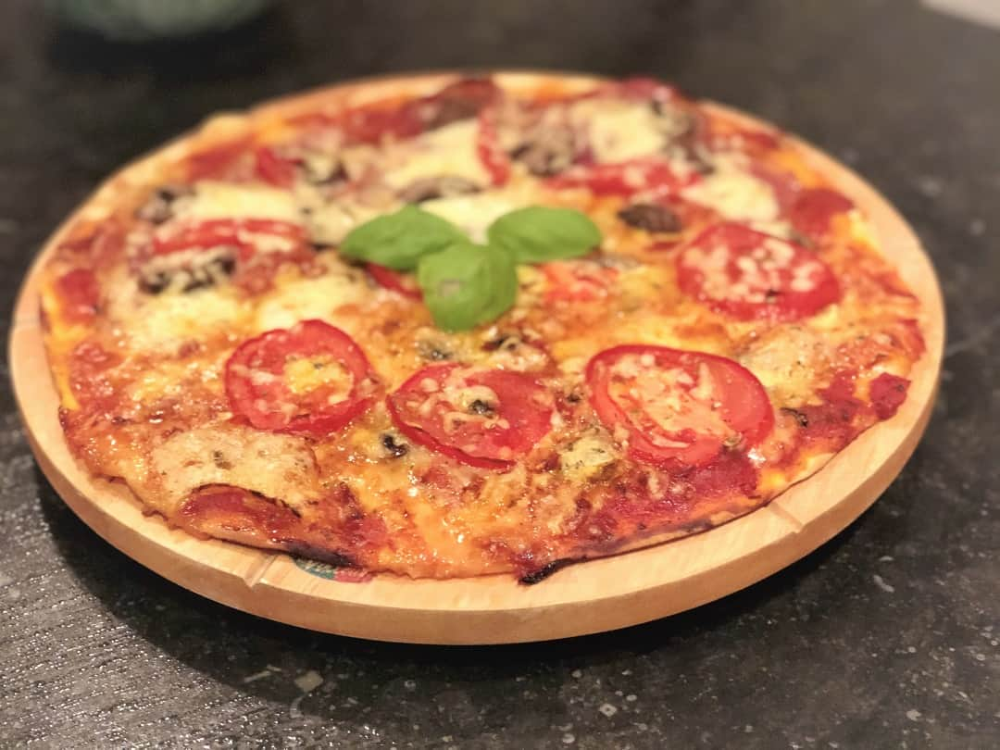

Pizza
Go back

Description
This delicious italian dish is a favorite of mine, which is why I would love to share with you
a recipe my italian grandmother used to make when I was a kid.
This dish is appropriate for intermediate cooks; let's say it's more difficult than baking an egg,
but less difficult than making a huge feast.
Ingredients
- 1 tblsp olive oil
- 1 garlic clove
- 1 small onion
- 800g crushed tomato
- 1 cup water
- 4 tblsp salt
- Handful basil leaves
Steps
- Heat oil in a large skillet over medium high heat. Add garlic and onion, cook for 2 – 3 minutes until translucent. Add tomato, water, salt and pepper.
- Stir, reduce heat to medium, simmer for 5 minutes. Optional: add 1/2 cup water and blend sauce until smooth (I do this for guests!).
- Stir through basil or dried herbs. Set aside.